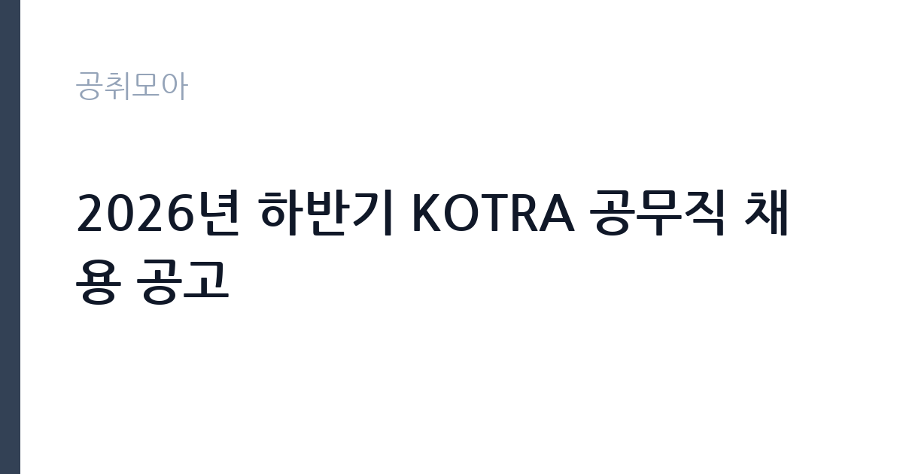

[공공기관] 2026년 하반기 KOTRA 공무직 채용 공고
대한무역투자진흥공사 · 서울 · 마감 2026-10-08 (D-15) · 출처 잡알리오

한눈에 보는 모집 조건
| 기관 | 대한무역투자진흥공사 |
|---|---|
| 공고명 | 2026년 하반기 KOTRA 공무직 채용 공고 |
| 고용형태 | 공무직 |
| 근무지 | 서울 |
| 게시일 | 2026-09-23 |
| 마감일 | 2026-10-08 (D-15) |
지원자격, 이렇게 읽으세요
- 공공기관 채용공시
- 세부 조건은 원문 공고문 확인
공고문의 응시자격은 짧게 쓰여 있지만 실제로는 세 가지를 봅니다. 첫째 결격사유 해당 여부, 둘째 자격·경력의 직무 연관성, 셋째 근무 시작 가능일입니다. 셋 중 하나라도 애매하면 원문 공고문의 세부 조항을 먼저 확인하고 지원서를 쓰세요. 특히 대한무역투자진흥공사 공고는 공무직 전형이라 서류에서 직무 연관 키워드(공공기관)를 명시하는 게 유리합니다.
이 공고의 포인트
'' 조건을 눈여겨보세요. 이번 대한무역투자진흥공사 모집에서 '공공기관 채용공시' 항목이 사실상 1차 필터 역할을 합니다. 본인이 맞는다면 지원 우선순위를 맨 위로 올리고, 아니라면 비슷한 조건의 관련 공고 3개를 함께 검토해 차선을 마련해 두세요.
전형은 어떻게 진행되나
대부분 서류심사 후 면접심사 순으로 진행됩니다. 서류에서는 지원서·자기소개서의 직무 적합성을 보고, 면접에서는 실무 이해도와 근무 지속 가능성을 봅니다. 마감일(2026-10-08) 직전에는 접속이 몰려 원서 접수가 막히는 경우가 있으니 최소 하루 전 제출을 권합니다. 제출 후에는 접수번호·수험표 출력 여부를 반드시 확인하세요.
원문에서 확인한 전형 방식
[공통 자격요건] ㅇ 학력, 전공, 학점, 성별, 연령 제한 없음 단, 연령의 경우 공사 정년에 도달한 자는 지원 불가 * 공사 직원의 정년은 만 60세임 (단, 경비 및 미화의 경우 만 65세) ㅇ 남성의 경우 군필 또는 면제자 (단, 합격자 발표 시점 기준 전역 가능한 자 포함) ㅇ 공사 인사규정에 의한 채용 결격사유에 해당하지 않는 자 ㅇ「국가공무원법」제33조의 결격사유에 해당되지 않는 자 ㅇ 채용분야별 필수 요건이 있는 경우 이를 충족하는 자 ㅇ 임용(예정)일로부터 근무가 가능한 자 [채용 분야별 필수요건] ㅇ 사무/장애인 제한경쟁 : 「장애인고용촉진 및 직업재활법 시행령」에 따른 장애인 ㅇ 시설(경비)/보훈 제한경쟁 : 「국가유공자 등 예우 및 지원에 관한 법률」등에 따른 취업지원대상자 중 취업지원대상자 증명서 발급이 가능한 자, 일반경비원 신임교육과정 이수자 혹은 교육 면제 대상자* * 경비업법 시행령 제18조 제2항에 의거 ㅇ 시설(경비)/공개경쟁채용 : 일반경비원 신임교육과정 이수자 혹은 교육 면제 대상자* * 경비업법 시행령 제18조 제2항에 의거 ㅇ 시설(미화)/공개경쟁채용 :
위 내용은 대한무역투자진흥공사 원문 공고의 전형 항목을 그대로 옮긴 것입니다. 단계별 배수와 평가 요소가 적혀 있으니 본인 강점과 맞는 단계에 맞춰 준비 순서를 정하세요. 전형별 합격자 발표일도 원문에서 함께 확인하는 것이 좋습니다.
이런 분께 추천해요
- 서울 근무가 가능한 분 — 통근·거주 조건이 맞는지가 1순위입니다
- 공무직 전형을 찾는 분 — 공공기관 분야 관심자라면 우선 검토 대상입니다
- 마감(2026-10-08) 안에 서류를 낼 수 있는 분 — D-15이니 오늘 지원서 초안부터 잡으세요
지원 전 체크리스트
- 대한무역투자진흥공사 원문 공고문 저장했는가(공고 변경 대비)
- 지원서 초안과 증빙 파일이 준비됐는가
- 접수 마감일 2026-10-08(D-15)을 달력에 표시했는가
- 서울 출퇴근·거주 조건이 맞는가
모집 일정과 제출 타이밍
게시일은 2026-09-23, 마감은 2026-10-08입니다. 남은 기간은 약 15일입니다. 서류 준비에 14일을 쓰고 마지막 하루는 접수·확인용으로 남겨두세요. 공공 채용은 마감일 24시간 전부터 지원자가 몰려 접수 페이지가 느려지거나 증빙 업로드가 실패하는 일이 잦습니다. 일정 운영의 정석은 이렇습니다. 첫날에는 공고문과 직무기술서를 출력해 응시자격·우대사항에 형광펜을 치고, 중간 기간에는 자기소개서 초안과 증빙 스캔을 끝내고, 마감 전날에는 접수 시스템에 미리 입력까지 마쳐 두는 것입니다. 마감 당일에 처음 접속하는 지원자가 가장 많이 탈락합니다. 접수번호가 발급되고 수험표(또는 접수확인서)가 출력돼야 접수가 끝난 것이니, 제출 후 확인증까지 꼭 챙기세요.
직무 이해하기: 공공기관
공공기관 실무의 공통분모는 직무기술서와 성실성입니다. 채용 분야의 직무기술서를 내려받아 필요 역량을 자기소개서에 그대로 녹이세요. 공공 채용은 블라인드 전형이 많아 사진·학교·출신지를 가리는 대신 직무 연관 경험의 구체성이 당락을 가릅니다. 대한무역투자진흥공사의 이번 채용(공무직)도 같은 잣대로 보면 됩니다. 공고 제목에 적힌 분야명과 직무기술서의 필요역량을 나란히 놓고, 본인 경험에서 겹치는 키워드를 세 개 이상 뽑아보세요. 그 세 개가 자기소개서와 면접 답변의 뼈대가 됩니다.
자기소개서 작성 팁
좋은 자기소개서의 공식은 단순합니다. 지원 분야(공공기관)와의 인연 한 줄, 숫자가 박힌 경험 두 개, 입사 후 포부 한 단락입니다. 반대로 대한무역투자진흥공사 서류 탈락 사유 상위권은 늘 비슷합니다. 직무와 무관한 자서전식 전개, 증빙 자료와 어긋나는 주장, 마감일(2026-10-08) 실수입니다. 공무직 전형 지원자라면 채용 즉시 업무가 가능하다는 점을 글로 못 박아 두세요. 실무 투입 속도가 가산점처럼 작용합니다.
면접 준비 포인트
면접관의 질문은 두 갈래입니다. 서류 내용의 사실 관계 확인, 그리고 우리 조직에 맞을지에 대한 판단입니다. 자소서의 핵심 경험 두 개를 1분 안에 설명하는 연습을 해두고, 대한무역투자진흥공사의 대표 사업 하나를 지원 분야(공공기관)와 엮은 답변을 준비해 가세요. 마무리 질문에서는 근무지(서울)와 공무직 근무가 가능하다는 뜻을 간결하게 전하는 게 좋습니다. 단정한 복장, 30분 전 도착, 결론 우선 답변이 기본 수칙입니다.
급여·근무조건 읽는 법
급여표를 볼 때는 기본급과 실수령액을 구분해야 합니다. 공고문 수치는 대개 기본급이라 수당·상여가 빠진 금액입니다. 공무직 모집에서는 계약 기간과 갱신 조건, 4대 보험·퇴직금 적용이 핵심 체크 항목입니다. 대한무역투자진흥공사 원문의 보수 규정을 펼치고, 근무지(서울)가 외곽이거나 야간·주말 근무가 있다면 주거·교통 지원 조항까지 확인한 뒤 지원서를 내세요.
자주 묻는 질문
- 경쟁률은 어느 정도로 예상되나요?
인기 기관·서울 근무 공고는 서류 경쟁률이 10대 1을 넘는 일이 흔합니다. 다만 '' 같은 조건부 전형은 실질 경쟁률이 낮아지는 경우가 많으니, 본인 조건에 맞는 공고를 고르는 것 자체가 전략입니다. - 합격자 발표는 어디서 확인하나요?
대한무역투자진흥공사 홈페이지 채용 게시판과 지원 시 등록한 문자·이메일로 안내됩니다. 발표일에는 접속이 폭주하니 접수번호를 미리 메모해 두세요. 예비합격자 운영 여부도 원문에서 함께 확인하는 것이 좋습니다. - 불합격하면 다음 기회는 언제인가요?
공공기관은 상·하반기 정기 채용과 수시·추가 모집이 반복됩니다. 이번 마감일(2026-10-08)을 놓쳐도 같은 기관의 다음 회차가 열리니, 공취모아의 공공기관 탭을 구독하듯 수시로 확인하세요.
함께 보면 좋은 공고
[공공기관] 2026년 PAO 인턴 채용 공고 — 마감 2026-10-08[공공기관] 한국노동연구원 기간제 행정원(보훈대상자 제한경쟁) 채용 공고(2026-6호) — 마감 2026-10-07[공공기관] (재)인천여성가족재단 아이사랑꿈터운영지원단 보육직5급(정규직) 공개경쟁채용 공고 — 마감 2026-10-08출처: 잡알리오 공개정보를 바탕으로 공취모아가 정리한 안내글입니다. 모집 조건·일정은 변경될 수 있으니 지원 전 반드시 원문 공고문을 확인하세요. 본 글은 정보 제공용이며 합격을 보장하지 않습니다.